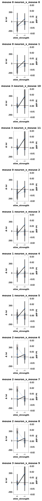

Neurons example with stim types¶
Generate some data¶
from bayes_window import models, fake_spikes_explore, BayesWindow, BayesRegression
from bayes_window.generative_models import generate_fake_spikes,generate_spikes_stim_types
from importlib import reload
import numpy as np
import altair as alt
---------------------------------------------------------------------------
ModuleNotFoundError Traceback (most recent call last)
/tmp/ipykernel_2483/2927165419.py in <module>
----> 1 from bayes_window import models, fake_spikes_explore, BayesWindow, BayesRegression
2 from bayes_window.generative_models import generate_fake_spikes,generate_spikes_stim_types
3 from importlib import reload
4 import numpy as np
5 import altair as alt
ModuleNotFoundError: No module named 'bayes_window'
df = generate_spikes_stim_types(mouse_response_slope=3,
n_trials=2,
n_neurons=3,
n_mice=4,
dur=2, )
window = BayesRegression(df, y='isi', treatment='stim', condition=['stim_strength','neuron_x_mouse'],
group='mouse')
window.fit(model=models.model_hierarchical)
---------------------------------------------------------------------------
NameError Traceback (most recent call last)
<ipython-input-1-31ea449c3caf> in <module>
----> 1 window = BayesRegression(df, y='isi', treatment='stim', condition=['stim_strength','neuron_x_mouse'],
2 group='mouse')
3 window.fit(model=models.model_hierarchical)
4
NameError: name 'BayesRegression' is not defined
window.plot(x='stim_strength',column='mouse',independent_axes=False,row='neuron_x_mouse')
# window.chart_posterior_hdi

window.chart
